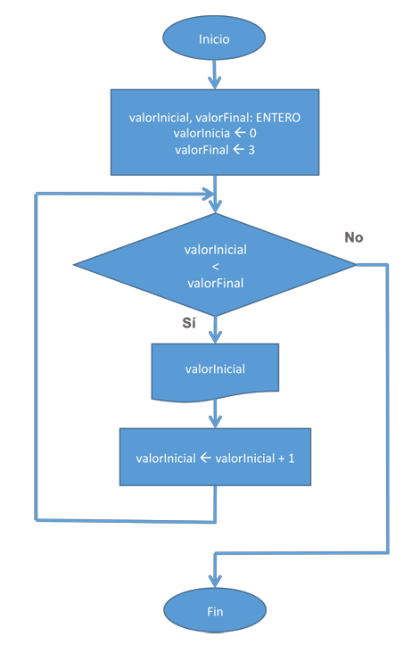
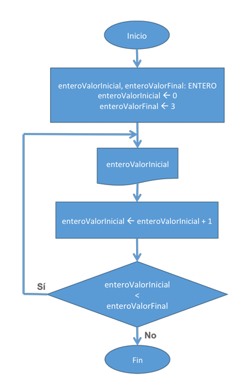
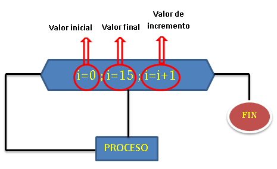

Las estructuras repetitivas, o bucles, son la herramienta fundamental para automatizar tareas. Permiten ejecutar un conjunto de instrucciones de manera sistemática y eficiente, evitando la repetición de código y permitiendo a los algoritmos procesar grandes volúmenes de datos o esperar acciones del usuario.
"La habilidad de hacer que una máquina repita una tarea millones de veces con precisión es lo que define el poder de la programación."
Es el bucle de pre-prueba. La condición se evalúa al inicio de cada iteración. Si la condición es "Falsa" desde el principio, el cuerpo del bucle nunca se ejecuta. Ideal para repeticiones de número desconocido.

Es el bucle de post-prueba. El cuerpo se ejecuta al menos una vez antes de que se evalúe la condición. Es perfecto para menús de usuario o validaciones donde se requiere una primera acción.

Es el bucle de iteración definida. Se utiliza cuando se conoce de antemano el número exacto de repeticiones. Compacta la inicialización, la condición de parada y el incremento en una sola línea.

La elección del bucle se basa en la lógica: ¿Necesitas garantizar una ejecución? (Do-While). ¿Conoces el número de iteraciones? (For). ¿Depende de una condición externa? (While).
El uso correcto de cada bucle mejora drásticamente la legibilidad y mantenimiento del código.
Las estructuras repetitivas son el motor que permite a los programas de software procesar información de forma masiva sin requerir intervención manual. Al entender cuándo usar "Mientras", "Repetir-Hasta" o "Para", se da el paso crucial de escribir código que no solo funciona, sino que es elegante y escalable.